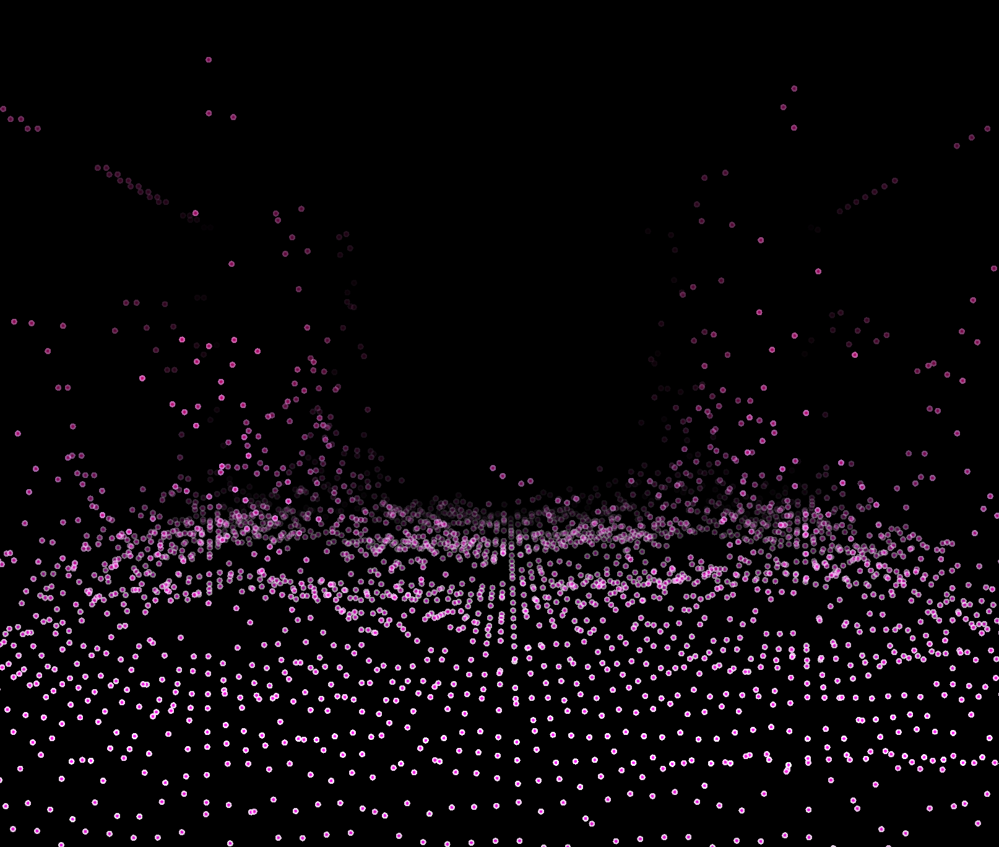

E-mail: yli76@calpoly.edu
Youtube: Gelzone Unsas
CPE 471 Quarter Project - Winter 2022
Make a 3D audio visualizer that reads in audio files, shows visualizations rendered with OpenGL. The visualizations will be rendered in real-time, and fade to black when it’s far from the viewport/camera.
After getting the audio sample per block from the audio file reader based on the sample rate, the ring buffer of GLfloat type can be used for the visualizer. I have set up the size of the buffer to be 10 times bigger than the expected block size for real-time use.
// Setup Audio Source
audioTransportSource.prepareToPlay (samplesPerBlockExpected, sampleRate);
// Setup Ring Buffer of GLfloat's for the visualizer to use
// Uses two channels
ringBuffer = new RingBuffer (2, samplesPerBlockExpected * 10);
An oscilloscope uses a two-axis graph to give a visual representation of a waveform over time, with the horizontal axis representing time and the vertical axis representing the amplitude. In music production, oscilloscopes are commonly used to assist dynamics processing and sound synthesis.
For the oscilloscope calculation, I sum up the 2 channels in the ring buffer and further pass the sample data into the shader as a uniform variable to perform amplitude calculation which then maps to positions.
Rendering the oscilloscope:
A sound spectrum displays the different frequencies present in a sound. is a representation of a sound – usually a short sample of a sound – in terms of the amount of vibration at each individual frequency. It is usually presented as a graph of either power or pressure as a function of frequency.
For the spectrum calculation, Instead of summing up the 2 channels in the ring buffer, I keep them separately for the FFT calculation to show left and right channels individually on either half of the spectrum.
// Get the data from the ring buffer
FloatVectorOperations::add (fftData, readBuffer.getReadPointer(0, 0), RING_BUFFER_READ_SIZE);
FloatVectorOperations::add (fftData2, readBuffer.getReadPointer(1, 0), RING_BUFFER_READ_SIZE);
// Calculate FFTs
forwardFFT.performFrequencyOnlyForwardTransform (fftData);
forwardFFT.performFrequencyOnlyForwardTransform (fftData2);
// Find the range of values produced for excluding samples
Range maxFFTLevel = FloatVectorOperations::findMinAndMax (fftData, fftSize / 2);
Range maxFFTLevel2 = FloatVectorOperations::findMinAndMax (fftData2, fftSize / 2);
Rendering the spectrum on GL_POINTS for simplity, plan to change to a mesh for future implementation: